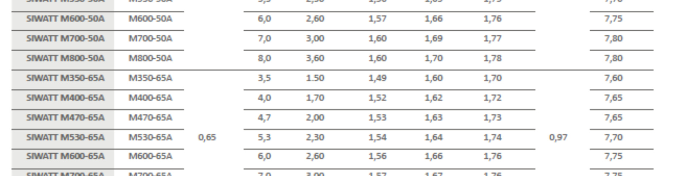

Naloga: Analiza izgub transformatorja
Transformator ima naslednje podatke: $S_n = 50 \text{ kVA}$; $p = N_1/N_2 = 6$; $U_{1n} = 2400 \text{ V}$; $f_n = 42 \text{ Hz}$; $P_0 = 300 \text{ W}$; $R_1 = 0,76 \ \Omega$; $R_2 = 0,006 \ \Omega$.
- Določite razmerje izgub $P_{Cun}/P_{Fen}$ pri nazivnem obratovalnem stanju.
- Določite razmerje izgub $P_{Cu}/P_{Fe}$ pri spremenjenih napajalnih razmerah - nespremenjeni efektivni vrednosti napetosti $U_1' = U_{1n}$, vendar povišani frekvenci $f' = 50 \text{ Hz}$.
Osnove za reševanje
Prestavno razmerje transformatorja je definirano kot $p = \frac{N_1}{N_2} = \frac{U_1}{U_2}$.
Tok prostega teka je mnogo manjši od nazivnega toka transformatorja ($I_0 \ll I_n$), zato lahko izgube v prostem teku $P_0$, merjene pri nazivni napetosti in frekvenci, izenačimo z izgubami v feromagnetnem (železnem) jedru transformatorja:
Ohmski upornosti primarnega in sekundarnega navitja ($R_1, R_2$) veljata za toplo stanje navitij pri $75^\circ\text{C}$.
a) Izgube pri nazivnem obratovalnem stanju
Najprej določimo nazivne tokove na obeh straneh transformatorja iz podane nazivne moči $S_n = 50 \text{ kVA}$:
S pomočjo prestavnega razmerja določimo tok na sekundarni strani ($I_{2n}$):
Izgube v bakru $P_{Cun}$ so posledica Joulovega segrevanja navitij ($I^2R$). Skupne izgube izračunamo kot seštevek izgub v primarnem in sekundarnem navitju ob nazivnem toku:
Iz podatkov vemo, da so izgube v železu pri nazivnem stanju enake $P_{Fen} = P_0 = 300 \text{ W}$. Razmerje izgub pri nazivnem obratovalnem stanju je tako:
b) Razmerje izgub pri spremenjenih napajalnih razmerah
Izgube v železu se delijo na histerezne izgube ($P_h$) in vrtinčne izgube ($P_v$). Celoten izraz zanje poenostavimo na skupen izraz za izgube v feromagnetnem jedru:
Pri tem je $k_{Fe}$ podatek proizvajalca pločevine za dano gostoto pretoka (npr. $1,0 \text{ T}$ ali $1,5 \text{ T}$) pri $50 \text{ Hz}$. Maso jedra $m$ in koeficient $k_{Fe}$ označimo kot konstante. Če obratovalno stanje primerjamo s starim, uporabimo razmerje novih in starih izgub (pri čemer se snovni in konstrukcijski parametri krajšajo):
Toda kako določimo spremembo magnetnega pretoka $B'$? Spomnimo se Faradayovega zakona $E = 4,44 \cdot f \cdot B \cdot N \cdot S$. Ker v transformatorju velja $U \approx E$ (zanemarimo padec napetosti na upornosti), lahko zapišemo:
Razmerje gostote pretoka v novem stanju ($B'$) glede na staro ($B$) je torej (upoštevajoč, da $N$ in $S$ ostaneta konstantna):
Ker naloga pravi, da napetost ostane nespremenjena ($U_1' = U_1$), se napetosti pokrajšata:
Če dvignemo frekvenco iz 42 Hz na 50 Hz, a napetost pustimo isto, imajo magnetne silnice manj časa, da "napolnijo" jedro med vsako polperiodo. Posledično se maksimalna gostota pretoka ($B$) zmanjša. To v praksi s pridom izkorišča letalska tehnika (frekvenca 400 Hz) in sodobni varilni aparati (1000+ Hz). Pri višjih frekvencah jedro ne preide v nasičenje, zato ga lahko drastično pomanjšamo – električni stroji postanejo bistveno manjši in lažji!
Sedaj ta zelo pomemben rezultat vstavimo nazaj v enačbo za razmerje izgub $P_{Fe}'/P_{Fe}$:
Vidimo, da se eksponent matematično pokrajša, in ostane nam golo razmerje frekvenc! Z njim izračunamo nove izgube v železu pri $50 \text{ Hz}$:
Ker se obratovalna napetost ni spremenila ($U_1' = U_{1n}$), so primarni in sekundarni nazivni tokovi (pri enaki navidezni moči) nespremenjeni. S tem ostanejo izgube v bakru popolnoma enake prvotnim ($P_{Cu}' = P_{Cun} = 423,50 \text{ W}$).
Končno razmerje izgub pri spremenjenem frekvenčnem stanju je:
Dodatek: Specifične izgube pločevine iz kataloga proizvajalca

Izsek kaže odvisnost izgub $W/\text{kg}$ pri gostotah $1.0\text{ T}$ in $1.5\text{ T}$ ob frekvenci $50\text{ Hz}$.
Preveri svoje znanje
1. Kviz: Povečanje napetosti in frekvence
Izračunajte nove izgube v železu $P_{Fe}'$, če se hkrati povečata tako napetost kot frekvenca. Stare vrednosti so $P_{Fe} = 300 \text{ W}, U_{1} = 2400 \text{ V}, f = 42 \text{ Hz}$. Nove vrednosti naj bodo $U_{1}' = 2880 \text{ V}$ in $f' = 50 \text{ Hz}$. Vnesite nov $P_{Fe}'$ v Wattih.
Prikaži namig/rešitev
Najprej ugotovimo novo razmerje gostot pretoka: $\frac{B'}{B} = \frac{U_1' \cdot f}{U_1 \cdot f'} = \frac{2880 \cdot 42}{2400 \cdot 50} = \frac{120960}{120000} = 1,008$.
Nato vstavimo v enačbo: $P_{Fe}' = P_{Fe} \cdot \frac{f'}{f} \cdot \left(\frac{B'}{B}\right)^2 = 300 \cdot \frac{50}{42} \cdot (1,008)^2 \approx 362,88 \text{ W}$. Zaradi zaokroževanja bo sprejeta vsaka vrednost med 362 in 364 W.
2. Kviz: Regulacija V/Hz
Pri regulaciji hitrosti elektromotorjev s frekvenčnikom želimo doseči, da jedro stroja optimalno deluje (v kolenu magnetilnice). Zakaj mora frekvenčnik pri zniževanju frekvence (npr. z $50 \text{ Hz}$ na $25 \text{ Hz}$) ustrezno znižati tudi napetost na sponkah?
Toplotna simulacija izgub v železu ($P_{Fe}$)
Spreminjajte parametre napajanja, da opazujete spremembo izgub v železnem jedru. Izhodiščne izgube $P_{Fe} = 300 \text{ W}$ pri $U_1 = 2400 \text{ V}$ in $f = 42 \text{ Hz}$.
Trenutni rezultati:
Relativni magnetni pretok $B'/B = $ 1.00
Izgube v železu $P_{Fe}' = $ 300.0 W